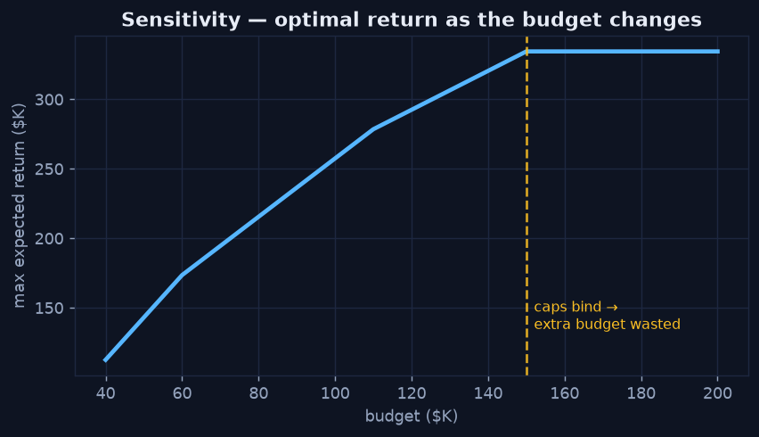

Feasible, Not Just Optimal
Chapter 4 — The Discipline of a Trustworthy Recommendation
A mathematically optimal answer that violates a real constraint — or that rests on a prediction the business can't trust — is worthless. This final chapter is about the judgement that turns a solver's output into a recommendation a leader can actually act on.
Sensitivity — How Sturdy Is the Answer?
The single most useful follow-up to any optimization is: how much does the answer change if an assumption changes? Re-solving as the budget varies reveals where extra money keeps earning and where it stops. Here, every additional dollar earns until total spend hits $150K — the sum of the channel ceilings. Beyond that, the caps bind: there is nowhere left to put money, and additional budget is simply wasted.
Python · scipy.optimize
for budget in range(40_000, 200_001, 5_000):
_, expected = optimize(budget=budget) # re-solve at each budget
print(budget, expected)
# return rises with budget... until the channel caps (sum = $150K) bind
Return climbs with budget until the channel caps bind at $150K, then flattens — past that point, more budget buys nothing.
What Sensitivity Tells You
That flat section is a decision in itself: there is no point requesting more than $150K for this channel mix — the money would sit idle. The slope before the kink is the marginal value of budget (in LP terms, the shadow price); when it drops to zero, the constraint has taken over. Reading this curve stops two common mistakes: over-funding a plan that can't absorb the money, and under-funding one that still has room to earn.
The Honest Caveats
Prescriptive analytics is only as trustworthy as what feeds it. Three things must hold:
- The prediction is sound. The recommendation inherits every error in the expected-return estimates — carry that uncertainty through, don't treat an estimate as a certainty.
- The constraints are real. They must reflect actual limits, not a convenient approximation; a missing constraint produces a confidently infeasible plan.
- A human decides. The output is a recommendation to accept, override, and audit — with its assumptions stated — not an autopilot.
Closing the Loop
That is the full analytics lifecycle: Descriptive established what happened, Diagnostic found why, Predictive estimated what comes next, and Prescriptive turned that estimate into a defensible decision — feasible, sensitivity-checked, and owned by a person, not a black box.
That completes the Prescriptive Analytics mini-series — and the Types of Analytics set. See how to take these notebooks to production in From Notebook to Platform Pipeline →